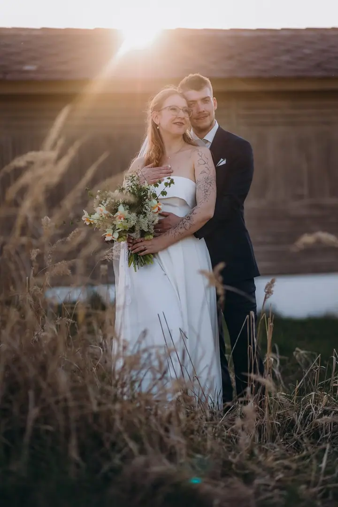
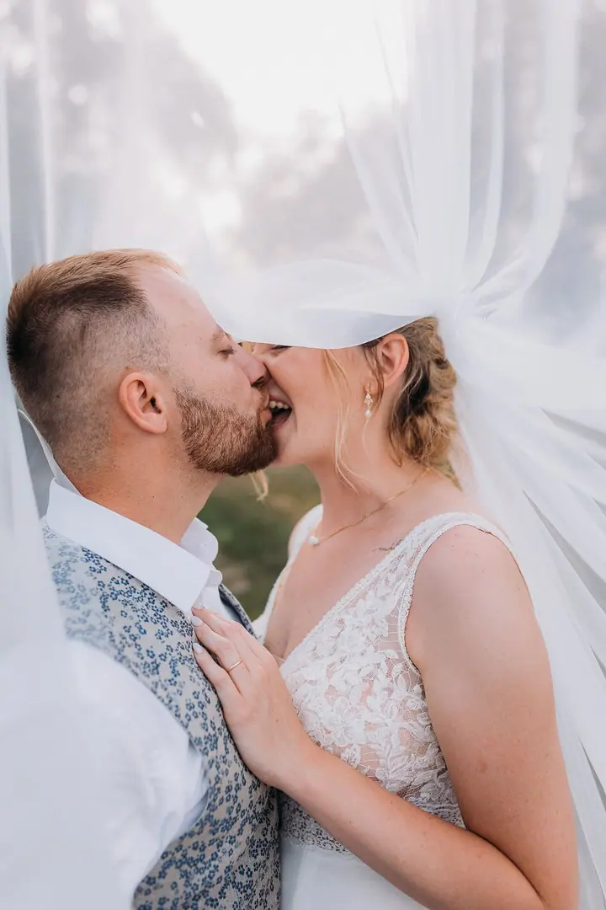
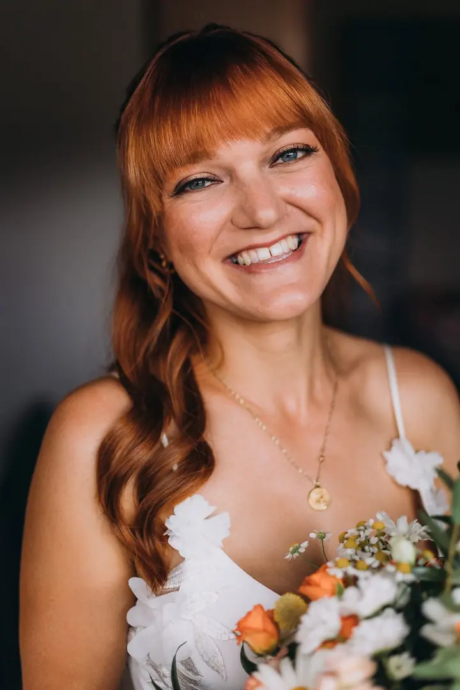

jedna
Svatební focení
Fotím reportážně a vaším dnem procházím nenápadně, bez krkolomných pozic. Vybrat si můžete balíček od 3 do 12 hodin focení a fotky dostanete na USB v dřevěné krabičce.

Svatební, rodinný a portrétní fotograf · České Budějovice, jižní Čechy, celá Česká republika

Jmenuji se Jan Kočer, ale klidně mi říkejte Honza. Jsem svatební fotograf z jižních Čech a kromě svateb fotím rodiny, těhotenské bříško i páry. Fotím reportážně a nenápadně, aby mi neutekl žádný úsměv ani slza.
Více o mně
Co fotím
jedna
Fotím reportážně a vaším dnem procházím nenápadně, bez krkolomných pozic. Vybrat si můžete balíček od 3 do 12 hodin focení a fotky dostanete na USB v dřevěné krabičce.
dvě
Focení probíhá jako procházka s přirozeným pózováním, nejraději v podvečer před západem slunce. Ke svatebnímu balíčku si ho můžete objednat jako zvýhodněné předsvatební focení.
Rodinné a těhotenské focení dělám v přírodě, v ateliéru nebo u vás doma. Trvá 45 až 90 minut a podle zvoleného balíčku dostanete 15 až 40 upravených fotek.
Ateliér je zařízený v boho stylu a hodí se pro rodiny do čtyř osob, páry i těhotenské focení. Fotíme zhruba 45 minut a dostanete 12 upravených fotek.
Chci, abyste to byli vy a užívali si jeden druhého.
Za objektivem
Ahoj, jsem Honza, svatební fotograf z jižních Čech. Mimo svateb se věnuji rodinnému, těhotenskému a párovému focení a přijedu za vámi kamkoliv. Věřím, že osobní přístup a přátelský vztah jsou ten nejlepší základ pro to, abychom spolu udělali skvělé fotky.
Svoji práci považuji za přirozenou, moderní a svěží. Věřím ve fotky, které jsou oku uvěřitelné a barevně sladěné. Kromě povinných skupinek po obřadu vás nebudu nutit do krkolomných pozic. Chci, abyste to byli vy a užívali si jeden druhého.
Nechci být jen fotograf, který přijde a zase odejde. Rád vám pomůžu naplánovat harmonogram dne, poradím s dodavateli a budu vám k dispozici kdykoliv během příprav. Těším se, až vás poznám a stanu se součástí vašeho dne.
Jan
Rád se s vámi potkám osobně ještě před svatbou. Domluvíme se na všem podstatném, abychom předešli zbytečným komplikacím.
Pomůžu vám s harmonogramem dne, poradím, co je kdy vhodné, a doporučím ověřené kolegy a dodavatele.
Fotím reportážně a dnem procházím nenápadně. Kromě skupinek po obřadu vás nebudu nutit do pózování, jen si užívejte jeden druhého.
Hotové fotky dostanete do 45 dní od svatby na USB v dřevěné krabičce, spolu s tištěnými fotkami v dárkové obálce.
Portfolio
Otázky
Svatební balíčky začínají na 10 500 Kč za 3 hodiny focení. Celodenní balíček na 12 hodin včetně večerní zábavy stojí 21 000 Kč.
Fotky ze svatby dodávám do 45 dní. Dostanete je na originálním USB v dřevěné krabičce a k tomu tištěné fotky 10 × 15 cm.
Ano, přijedu vás vyfotit kamkoliv. Cestovné počítám 7 Kč za kilometr a termín svatby se rezervuje zálohou 3 000 Kč.
Ideální je 30. až 32. týden, kdy vás většinou ještě nic neomezuje. Venku fotíme ráno nebo v podvečer, v ateliéru je čas volnější.
Napište pár vět o tom, co si představujete. jankocerfotograf@gmail.com